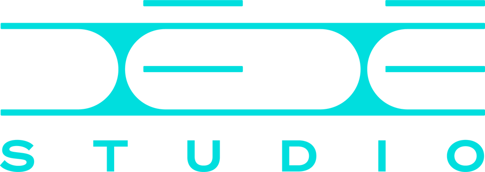
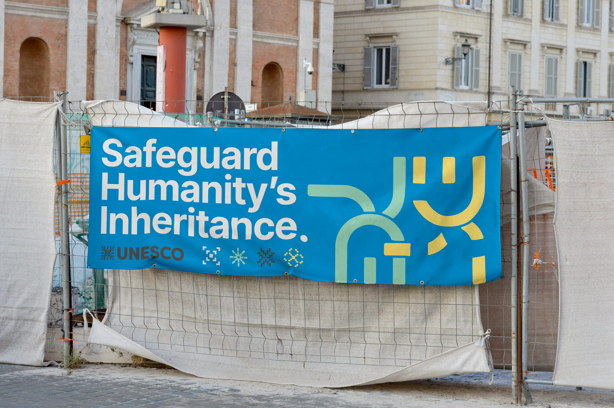
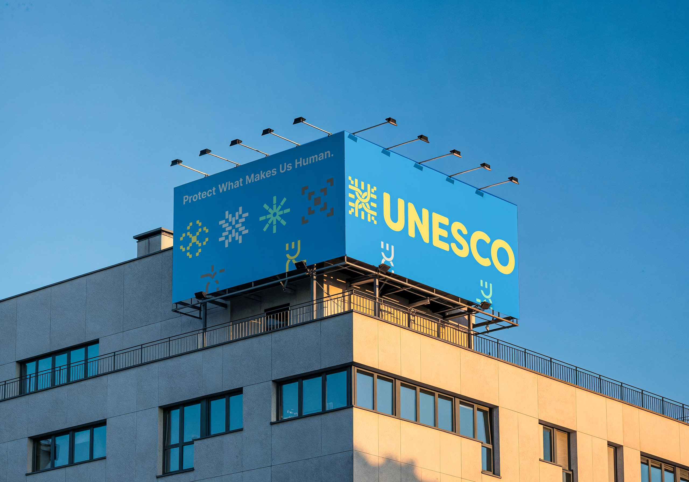
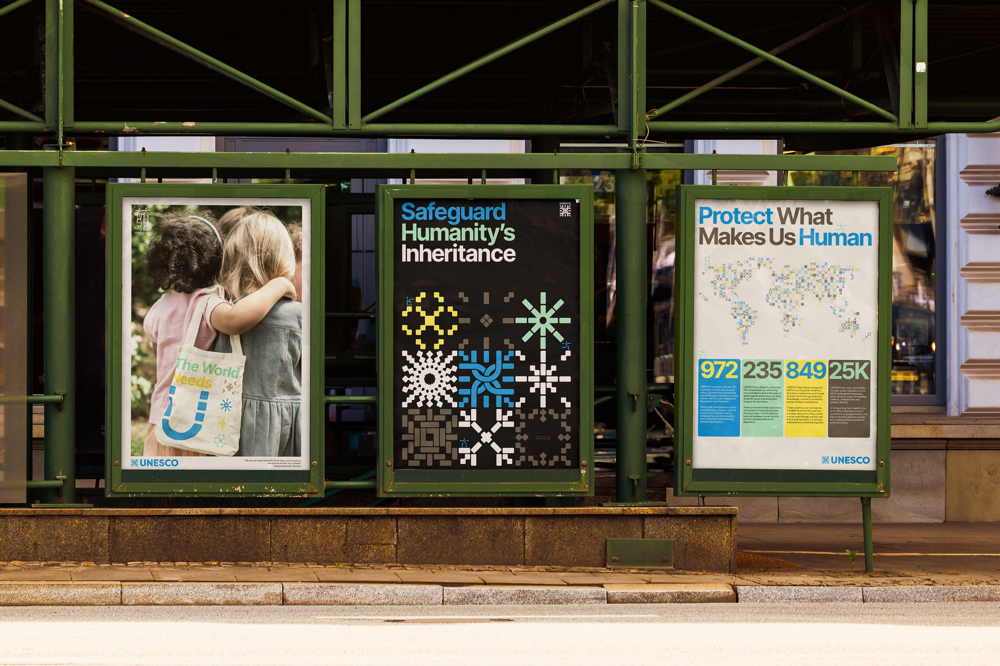
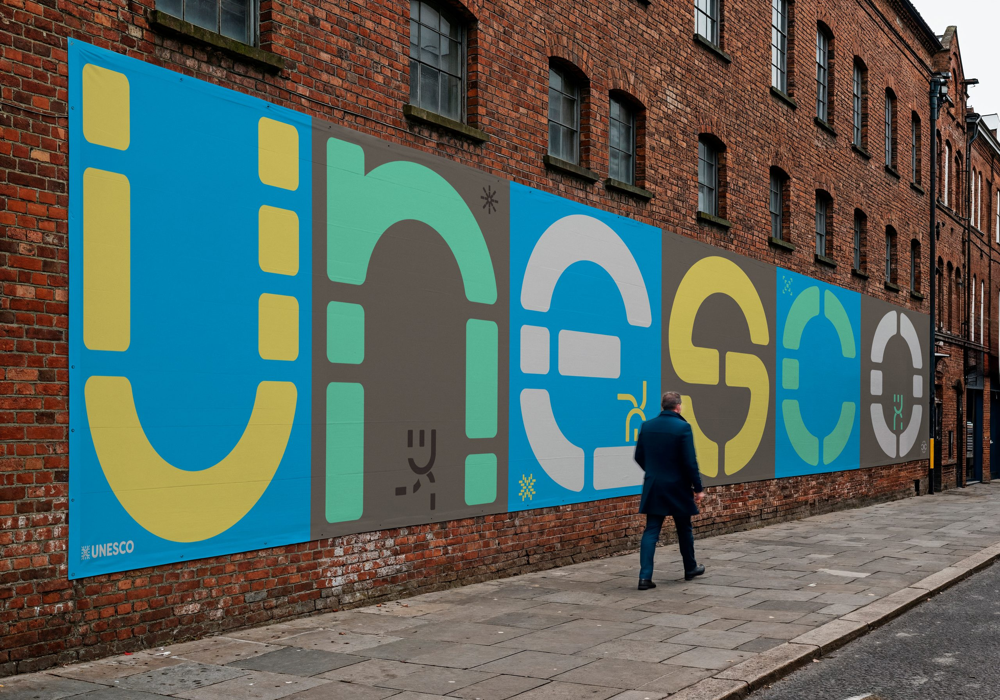
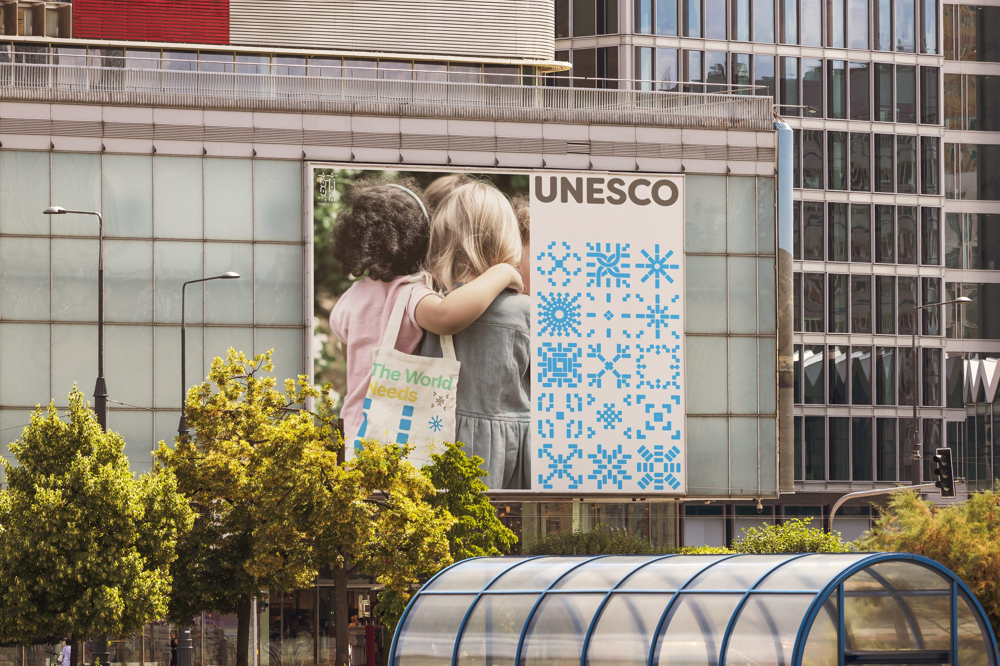

An identity system for the world's cultural heritage agency — exploring how a global organization can speak in every voice while remaining unmistakably itself.
UNESCO safeguards over eleven hundred sites across one hundred and sixty-seven countries. The redesign needed a system that could hold cultural richness without flattening it — a language that felt as at home in a Nairobi campaign as in a Kyoto exhibition.
We approached the wordmark as an anchor, then built outward: a modular typographic scale, a chromatic system tied to region and initiative, and a set of interactive components for the digital archive. Every touchpoint speaks the same grammar, phrased in local dialect.
01Foundations
The mark holds its own at the scale of a museum banner — and at the size of an app icon.
Proportions were tuned for both extremes. Optical spacing at large sizes, tightened counters at small — the wordmark reads confidently from a rooftop banner and stays legible on a lockscreen.

Image 01 Optical spacing at banner scale, tightened counters at icon scale.
02Palette
Chromatic system tied to region and initiative — warm earth for heritage, cool grey for archive, saturated brand for campaign.

03Voice
A system that respects local nuance while carrying a unified global voice.
The typographic scale is built on a single ratio that flexes across sixteen sizes — from a captioned image credit to a wall-scale statement. Regional teams inherit the ratio, not the pixel values, so every locale keeps its own texture.
Components ship as a Figma variables kit and a matching CSS token set — designers and engineers work from the same source of truth.
04Applications



The story ends where the reader begins.
Credits